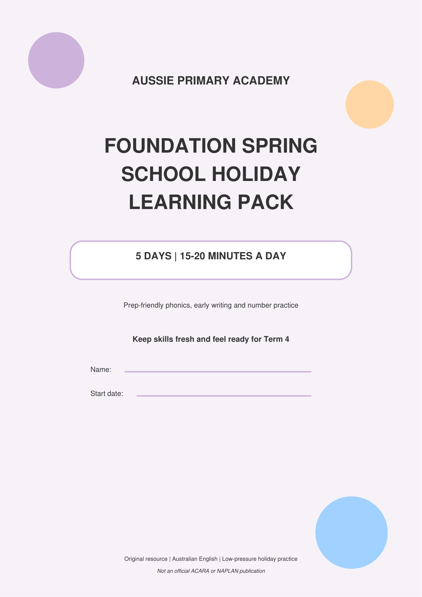

Foundation · Spring Holidays · English & Maths · Free Printable
Foundation Spring School Holiday Learning Pack
A free 10-page printable pack with 5 short daily sessions (15–20 minutes). Prep-friendly phonics, early writing and number practice to keep skills fresh and help children feel ready for Term 4.
Pack Preview

About This Holiday Pack
The Foundation Spring School Holiday Learning Pack is a low-pressure 5-day routine designed for Prep and Foundation students. Each day is short (15–20 minutes), calm and encouraging — not a holiday test.
Families complete one session a day. Grown-ups read directions together, let the child try, and stop after about 20 minutes. Help with reading or materials is welcome; the goal is confidence and continuity into Term 4.
5-Day Plan
- Day 1 — Read and respond (short story + questions)
- Day 2 — Word work and purposeful writing
- Day 3 — Number confidence and operations
- Day 4 — Applied maths (shapes, patterns, comparison)
- Day 5 — Mixed challenge and reflection
What's Included
- Parent guide and calm holiday routine
- Cover page with name and start date
- Reading comprehension activity
- Phonics, sounds and sight-word practice
- Guided sentence and writing planner
- Numbers to 20 and add/take-away practice
- Shapes, patterns and comparison tasks
- Screen-free challenges and reflection
- Answer key and adult guidance notes
Skills Practised
- Listening to and responding to a short text
- Beginning sounds, rhymes and letter formation
- Simple sentence writing
- Counting, comparing and ordering to 20
- Addition and subtraction within 10
- Shape, pattern and length/mass comparison
- Checking work and reflecting on effort
Teacher & Parent Notes
Use the parent script: “Show me what you notice. Which part can you try? If you get stuck, we will solve one example together.”
Mistakes are information, not failure. Return to one worked example instead of adding extra pages. The purpose is confidence and continuity, not holiday testing.
How to Use the Pack
- Print the PDF (A4 works well).
- Write the child’s name and start date on the cover.
- Complete one short session each day for five days.
- Read directions together; let your child try independently where possible.
- Use the answer key on the last page for quick checking.
- On Day 5, celebrate one success and note one Term 4 goal.
Who It Is For
Designed for Foundation / Prep students in Australia. Also useful for early Year 1 children who need a gentle review of phonics, early writing and numbers to 20 over the spring school holidays.
This is an original Aussie Primary Academy resource. It is not an official ACARA or NAPLAN publication.
Ready for a calm holiday learning routine?
Download the free 10-page pack and complete one short session a day.
⬇ Download Foundation Spring Holiday Pack